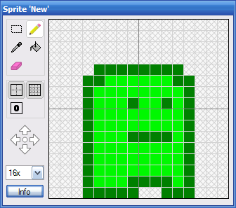
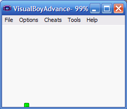

Keeping the player within the screen boundary
This tutorial has been tested with devkitARM release 26 and Spritely version 0.19.20 beta and verified to work for both GBA and NDS projects.
Step 1 : Create a sprite
Create a simple sprite.

Step 2 : Export project
Export your project and open Programmer's Notepad to edit the source code.
Step 3 : Keep player within screen bounds
To keep the player's sprite within the screen bounds, we need to add a check whenever the player tries to move.
If the player tries to go too far to the left, right, top or bottom, we need to detect it and prevent the movement.
To add these checks, find the following code:
game_state.cpp — Lines 94 - 102:
// If we need to move the player.
if (dx != 0 || dy != 0) {
// Record the player's new location.
_xPlayer += dx;
_yPlayer += dy;
// Move the player to the new location.
MoveObjectTo(kObj_Player, _xPlayer, _yPlayer);
}
And modify it as follows:
game_state.cpp — Lines 94 - 112:
// If we need to move the player. if (dx != 0 || dy != 0) { // Calculate the player's new location. int x = _xPlayer + dx; int y = _yPlayer + dy; // Don't let the player go outside the screen boundaries. if (x < 0 || x > SCREEN_WIDTH) dx = 0; if (y < 0 || y > SCREEN_HEIGHT) dy = 0; // Record the player's new location. _xPlayer += dx; _yPlayer += dy; // Move the player to the new location. MoveObjectTo(kObj_Player, _xPlayer, _yPlayer); }
Step 4 : Build/Run
If you build/run now, you'll see that the left and top borders are working as intended, but the right and bottom borders still allow the player to go (a little bit) offscreen.

This is because the code we wrote only checks the upper-left corner of the sprite. If we want to really keep the sprite on the screen, we need to take into account the width and height of the sprite.
Step 5 : Adjust for size of player sprite
Make the following changes:
game_state.cpp — Lines 94 - 116:
// If we need to move the player. if (dx != 0 || dy != 0) { // Calculate the player's new location. int x = _xPlayer + dx; int y = _yPlayer + dy; // Get the width/height of the player. int width, height; GetObjectSize(kObj_Player, &width, &height); // Don't let the player go outside the screen boundaries. if (x < 0 || x > SCREEN_WIDTH - width) dx = 0; if (y < 0 || y > SCREEN_HEIGHT - height) dy = 0; // Record the player's new location. _xPlayer += dx; _yPlayer += dy; // Move the player to the new location. MoveObjectTo(kObj_Player, _xPlayer, _yPlayer); }
And the player's movement will be constrained to within the screen boundaries.
Finished!
Done.
Links to completed project
GBA:
NDS: